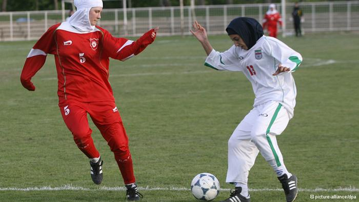

پذيرش > اخبار > طوفان دختران ایرانی؛ طنین نراقی خانمگل شد


 طوفان دختران ایرانی؛ طنین نراقی خانمگل شد طوفان دختران ایرانی؛ طنین نراقی خانمگل شد
10 آبان 1391 - - نسخه قابل چاپ
دویچه وله: هفته گذشته تیم ملی دختران زیر ۱۹ سال ایران در مرحله نخست مقدماتی جام ملتهای آسیا به میزبانی اردن، موفق شد جواز صعود به دور دوم را دریافت کند.
موفقیت شاگردان مريم ايراندوست در شرایطی رقم خورد که صداوسیما مانند سایر رسانههای حکومت، صرفاً به اعلام نتایج پرداخته و مانند رقابتهای پیشین بین المللی برای فوتبال زنان ایران، از پخش تصاویر ضبط شده یا حتی گلهای به ثمر رسیده نیز خودداری کرد.
تیم ایران در حالی به دور دوم از مرحله مقدماتی هفتمین دوره رقابتهای جوانان آسیا راه یافته که هر شش دوره گذشته را تیمهای شرق آسیا فتح کردهاند. سه بار ژاپن، یک بار هم چین، کره جنوبی و کره شمالی.
جالب آن که در شش دوره قبلی، هیچ تیمی از غرب آسیا حتی به نیمه نهایی نیز راه پیدا نکرده. طلسمی که شاید با درخشش تیمهای ایران و اردن در سال ۲۰۱۳ شکسته شود. ایران فعلاً باید به دور دوم بازیهای مقدماتی بیاندیشد که تیمهای تایوان، هندوستان، میانمار، ازبکستان و اردن نیز در آن حضور خواهند داشت. در ادامه، شرح بازیهای ایران در دور اول از مرحله مقدماتی آمده است.
ایران با ۱۲ گل از سد تاجیکستان گذشت
ایران ابتدا دروازه تیم تاجیکستان را به توپ بست و با برتری ۱۲-۲ آغازی درخشان در چارچوب این بازیها داشت. در ورزشگاه پورتای امان، مقرب زاد حسینعلی با پاس گل طنین نراقی موفق شد در سومین دقیقه اولین گل ایران را به ثمر برساند. پاس گل دوم را هم طنین نراقی داد به صغری فرمانی تا این بازیکن اردبیلی هم گلزنی کند.
طنین نراقی خودش گل سوم را با پاس گل مریم رحیمی وارد دروازه سعیده رحمانووا سنگربان تاجیکستان کرد که شب تلخی را پشت سر گذاشت. سپس سارا ظهراب نیا چهارمین گل ایران را به ثمر رساند. پنجمین گل نیز توسط طنین نراقی ستاره تیم ایران و روی پاس سمانه قاشیه زده شد.
در دقیقه ۳۸ نیمه نخست مریم رحیمی از روی نقطه پنالتی ششمین گل ایران را زد. اولین گل تاجیکستان در دقیه ۴۵ از روی ضربه ایستگاهی و توسط مهرانگیز شریف زاده از جمله بازیکنان پرتعداد فارسی زبان در این تیم به ثمر رسید.
نیمه دوم بازی در حالی آغاز شد که مریم رحیمی با پاس یاسمن پاکجو هفتمین گل ایران را وارد دروازه حریف کرد. هشتمین گل نیز توسط مریم رحیمی به ثمر رسید. نهمین گل ایران توسط طنین نراقی و باز هم با پاس مریم رحیمی وارد دروازه تاجیکستان شد.
نراقی که روزی رویایی را سپری کرد، دهمین و یازدهمین گل ایران را هم وارد دروازه کرد تا شش گل در یک بازی به ثمر رسانده باشد. دوازدهمین گل ایران توسط سمانه قاشیه زده شد. لیلا حلیمووا زننده دومین گل تاجیکستان بود.
۸ گل برای عبور از فلسطین
تیم ملی فوتبال دختران زیر ۱۹ سال ایران پس از زدن ۱۲ گل به تاجیکستان، در دومین مسابقه مقابل تیم فلسطین با نتیجه ۸ بر صفر به برتری رسید و راهی مرحله دوم شد.
گلهای ایران را شقایق روزبهان، مغرب زاد حسینعلی، طنین نراقی (سه بار) سارا ظهراب نیا (دو بار) و مریم رحیمی به ثمر رساندند. طنین نراقی که در بازی قبلی هم شش گل زده بود، در این بازی توانست تعداد گلهای خود را به عدد ۹ برساند.
بازی سوم ایران مقابل تیم اردن جنبه تشریفاتی داشت. اردنیها که با نتیجه ۳ بر صفر تاجیکستان را شکست داده و ۸-۰ از سد فلسطین گذشته بودند، در مسابقهای نزدیک با نتیجه ۳ بر ۲ بر ایران هم غلبه کردند تا در خانه، صدرنشین این گروه شوند.
پیش از این مسابقه بهناز طاهر خانی از بازیکنان اصلی تیم ملی به سایت فدراسیون فوتبال گفته بود: "گرچه صعود کردهایم اما این مسابقه برای ما حکم یک دیدار تدارکاتی بسیار سنگین را دارد."
در چهارمین دقيقه تيم ملی اردن اولين گل را وارد دروازه ايران كرد. سپس مريم رحيمی با پاس گل طنين نراقی اولين گل ايران را به ثمر رساند تا نيمه نخست با تساوی به پايان برسد. در نيمه دوم، دومين گل اردن به ثمر رسید اما باز هم مريم رحيمی گل مساوی را زد. با این حال گل برتری اردن در دقيقه ۷۵ وارد دروازه ايران شد تا اولین شکست شاگردان مریم ایراندوست رقم بخورد.
طنین نراقی، خانم گل مرحله مقدماتی
طنين نراقی ستاره این رقابتها بود که عنوان خانم گلی را نیز نصیب خود کرد. او در گفت وگو با سايت فدراسيون فوتبال ایران ضمن انتقاد از روند داوری بازیها گفت: بازيكنان شرايط را برايم به گونهای فراهم كردند كه بتوانم ۹ گل بزنم. با اتحادی كه بينمان وجود دارد با اقتدار از گروه خود صعود كردیم. برای من افتخار است كه خانم گل مسابقات قهرمانی آسيا در رده جوانان باشم اما من و تمام هم تيمیهايم، هدفمان فقط صعود و موفقيت است.
بهناز طاهرخانی (قزوین)، یاسمن پاکجو، سمیرا قاشیه، طنین نراقی و سمانه قاشیه (تهران)، صغری فرمانی (اردبیل)، افروز کربکندی، فاطمه عادلی و زهرا کشاورز (اصفهان)، مهدیه آمیغی (کرمان)، مریم نامی و سپیده حاجی نسب (ایلام)، شهین افلاکی و صابره رحمانی (فارس)، سارا ظهرابی نیا و زهرا کوراوند (خوزستان)، شقایق روزبهانی و کوثر کمالی (مازندران)، مقرب زاد حسینعلی (گیلان)، سمیرا اسماعیلی (آذربایجان شرقی)، مریم رحیمی (گلستان) و سرشین کمانگر (کردستان) اعضای تیم ملی فوتبال دختران ایران در این رقابتها بودند.
ارسال به
بالاترین
،
توییتر
،
فریندفید
،
فیسبوک
در همين بخش :
 پروین ذبیحی برنده جایزه حقوق بشری سازمان غيردولتى اتريشى سودويند شد پروین ذبیحی برنده جایزه حقوق بشری سازمان غيردولتى اتريشى سودويند شد
پخش کارت پستال و بروشور در روز جهانی زن در تهران
تمدید زمان برای امضای بیانیهی جمعی از فعالان زن به مناسبت هشت مارس
مجوزی که در نطفه خفه شد
بیش از 2000 امضا در اعتراض به تبعیض های آموزشی به مجلس تحویل داده شد
ديگر بخش ها :
طرح یک میلیون امضا
|
مقالات
|
سایت نوشته ها
|
اخبار
|
گزارش كمپين
|
گفت و گو
|
علیه سکوت
|
كوچه به كوچه
|
نامه های شما
|
گزارش ویژه
|
گفتگو با اعضا
|
ویژه سالگرد کمپین
|
تصویر برابری
|
دل آرام علی
|
تریبون
|
مقالات
|
تاریخ شفاهی
|
خارج از چارچوب
|
کتابخانه
|
درباره کمپین
|
کمپین در شهرها
|
کمپین در بند
|
صدای تغییر
|
ویژه 22 خرداد
|
لایحه حمایت از خانواده
|
گالری
|
عشا مومنی
|
امیر یعقوبعلی
|
خدیجه مقدم
|
راحله عسگری زاده و نسیم خسروی
|
پروین اردلان،جلوه جواهری، مریم حسین خواه، ناهید کشاورز
|
زینب پیغمبرزاده
|
سعیده امین، سارا ایمانیان، محبوبه حسین زاده، ناهید کشاورز و همایون نامی
|
احترام شادفر
|
نسیم سرابندی زاده،فاطمه دهدشتی
|
وبلاگ مهمان
|
پرونده خرم آباد
|
دستگیری ها
|
مریم مالک
|
پرستو اللهیاری
|
مهرنوش اعتمادی
|
سمیه رشیدی
|
Other Languages
|
همراهان
|
«فراخوان کمپین ده روز با بهاره هدایت»
| English
|